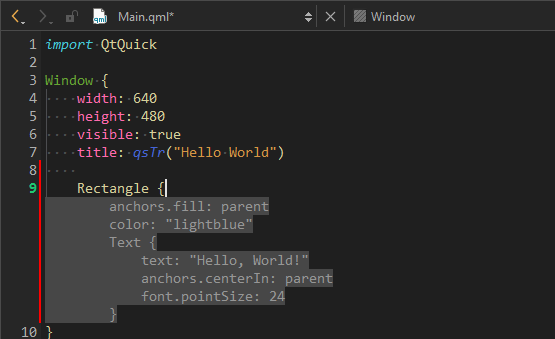
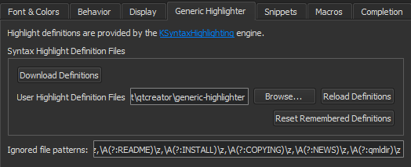
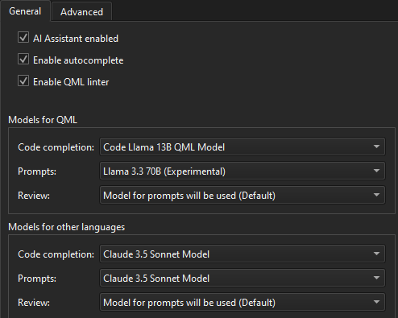
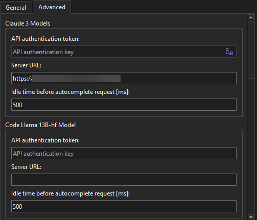
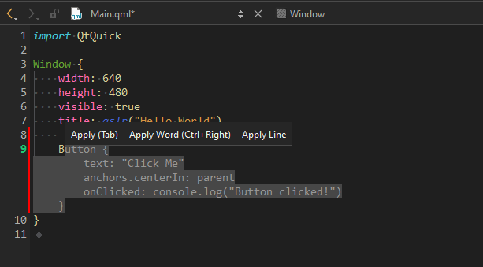

Use Qt AI Assistant
Qt AI Assistant is a coding assistant. When connected to a Large Language Model (LLM), it auto-completes your code, gives expert coding advice, suggests code fixes, as well as writes test cases and code documentation.

Qt AI Assistant is available for selected commercial Qt developer license holders. For more information on licensing, select Compare in Qt pricing.
To learn the basics of Qt AI Assistant, take the Qt Academy: Getting Started With Qt AI Assistant course.
Note: The LLM itself is not in scope of the Qt AI Assistant. You need to connect to a third-party LLM and agree to the terms and conditions, as well as to the acceptable use policy of the LLM provider. By using Qt AI Assistant, you agree to Terms & Conditions - Qt Development Framework.
Qt AI Assistant is currently experimental and powered by generative AI. Check all suggestions to make sure that they are fit for use in your project.
Note: Install and load the Qt AI Assistant extension to use it.
Install Qt AI Assistant
To load the Qt AI Assistant extension from the web:
- Go to Extensions.

- Select Use external repository.
- Select AI Assistant.
- Select Install.
Enable code syntax highlighting in the inline chat window
To enable code syntax highlighting in the inline chat window, go to Preferences > Text Editor > Generic Highlighter, and then select Download Definitions.

For more information, see Download highlight definitions.
Install and use Ollama
To use LLMs running locally on your computer with the Qt AI Assistant extension, install Ollama. You can run models available from the Ollama selection as well as custom models that you add to Ollama.
Run models on Ollama
To run models, enter:
ollama run <model-name>
For example:
ollama run codellama:7b-code
Supported models from Ollama
You can use the following models directly from Ollama:
codellama:7b-codedeepseek-coder-v2:litegpt-oss:20btheqtcompany/codellama-7b-qmltheqtcompany/codellama-13b-qml
Custom models
For custom models, follow the specific installation instructions for that mode. You can use the following custom models:
Connect to an LLM
You can connect to the following LLMs:
- Code Llama 13B QML (for Qt 6, running in a cloud deployment of your choice)
- Code Llama 13B (for Qt 5, running in a cloud deployment of your choice)
- Codestral (provided by Mistral)
- Claude 4.0 Sonnet (provided by Anthropic, remember that you need to have a token-based billing payment method configured for your Anthropic account: console.anthropic.com)
- Claude 4.5 Sonnet (provided by Anthropic, remember that you need to have a token-based billing payment method configured for your Anthropic account: console.anthropic.com)
- GPT 5 (provided by OpenAI, remember that you need to have a token-based billing payment method configured for your OpenAI account: platform.openai.com)
- DeepSeek V3.2 (provided by DeepSeek)
- Code Llama 13B QML through Ollama (running locally on your computer)
- Code Llama 7B QML through Ollama (running locally on your computer)
- Code Llama 7B through Ollama (running locally on your computer)
To connect to an LLM:
- Go to Preferences > AI Assistant > General.

- Select an LLM for each configurable use case.
- Go to Advanced.

- Enter the API authentication token and server URL of each LLM. For more information on where to get the access information, see the third-party LLM provider documentation.
Automatic code-completion
Qt AI Assistant can help you write code by suggesting what to write next. It prompts the LLM to make one code suggestion when you stop typing.
To accept the entire suggestion, select the Tab key.
To accept parts of the suggestions, select Alt+Right.
To dismiss the suggestion, select Esc or navigate to another position in the code editor.
To interact with Qt AI Assistant using the mouse, hover over the suggestion.

When you hover over a suggestion, you can accept parts of the suggested code snippet word-by-word or line-by-line.
To close the code completion bar, select the Esc key or move the cursor to another position.
To select the model for code completion, go to Preferences > AI Assistant > General.
In General, you can also turn auto-completion of code on or off globally for all projects. Qt AI Assistant consumes a significant number of tokens from the LLM. To cut costs, turn off the auto-completion feature when not needed, and use keyboard shortcuts for code completion.
Complete code from the keyboard
To trigger code suggestions manually, select Ctrl+'.
Enter prompts and smart commands
In an inline prompt window in the text editor, you can prompt the assistant to implement your requests in human language, ask questions, or execute smart commands. To open the chat, select Ctrl+Shift+A. Alternatively, to open the inline prompt window, you can select code and then select .
To close the inline prompt window, select Esc or  .
.
To go to Qt AI Assistant preferences from the inline prompt window, select  . There, you can set the model to use for prompts and code reviews.
. There, you can set the model to use for prompts and code reviews.
Request suggestions using human language
To request suggestions using human language, enter your requests into the input field. If you have highlighted code, the AI assistant adds it as context to the prompt. Qt AI Assistant shows a suggestion that you can copy to the clipboard by selecting Copy in the inline prompt window.
Request code review
To review code with Qt AI Assistant:
- Highlight code in the code editor.
- Open the inline prompt window.
- Select the /review smart command.
Qt AI Assistant reviews the code and suggests improvements. It uses QML Lint to review QML code if Enable QML linter is on in Preferences > AI Assistant > General.
Request test cases in Qt Test syntax
To write test cases with Qt AI Assistant:
- Highlight code in the code editor.
- Open the inline prompt window.
- Select the /qtest smart command.
Qt AI Assistant generates a test case in Qt Test format that you can copy and paste to your Qt test project.
To run the generated Qt Test cases, configure your CMakeLists.txt files and main.cpp file.
Configure the main project CMakeLists.txt
- Define your module as both a library and a QML module. The URI value determines the import name used in TestCase scripts:
qt_add_library({module_name} STATIC) qt_add_qml_module({module_name} URI {module_name} VERSION 1.0 QML_FILES Main.qml ) - Add the auto-generated plugin to your target's link libraries. The plugin name follows the pattern <module_name>plugin:
target_link_libraries({project} PRIVATE Qt6::Quick {module_nameplugin} ) - Add
QML_IMPORT_PATHat the end of the file to ensure the QML engine can locate your module:set(QML_IMPORT_PATH ${CMAKE_BINARY_DIR} CACHE STRING "" FORCE)
Configure the test project CMakeLists.txt
Link the plugin to your test target (test_directory):
target_link_libraries({test_directory} PRIVATE Qt${QT_VERSION_MAJOR}::QuickTest {module_nameplugin})
Configure the main project main.cpp
To load your QML component from the registered module, use loadFromModule():
engine.loadFromModule("{module_name}", "Main");
Configure external test projects
If the test project is outside the main project:
- Add the main project as a subdirectory in the test project
CMakeLists.txt:add_subdirectory(../{main_project_directory} ${CMAKE_BINARY_DIR}/{main_project_directory})
- Set the QML import path so Qt can find the module:
set_target_properties({test_directory} PROPERTIES QT_QML_IMPORT_PATH "${CMAKE_BINARY_DIR}/{main_project_directory}" )
Rebuild the projects.
Request code documentation in Markdown format
To create code documentation:
- Highlight code in the code editor.
- Open the inline prompt window.
- Select the /doc smart command.
Qt AI Assistant generates code documentation in a format that you can copy and paste to your documentation file.
Request fixing of code
To request a fix to your code:
- Highlight code in the code editor.
- Open the inline prompt window.
- Select the /fix smart command.
- Optionally, apply the changes to the code.
Qt AI Assistant suggests a fix that you can apply to your code.
Request explaining of code
To request an explanation of existing code:
- Highlight code in the code editor.
- Open the inline prompt window.
- Select the /explain smart command.
Qt AI Assistant provides an explanation of the highlighted code.
Add inline comments
To add inline comments to existing code with Qt AI Assistant:
- Highlight code in the code editor.
- Open the inline prompt window.
- Select the /inlinecomments smart command.
- Optionally, apply the comments to your code.
Qt AI Assistant adds inline comments that you can apply to your code.
See also Install extensions and Activate extensions.